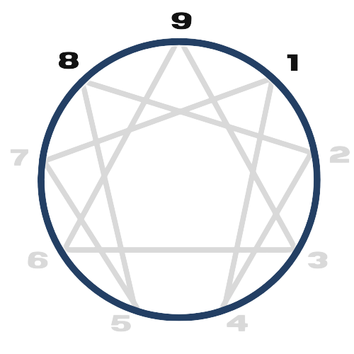

TIPO 08
(O confrontador)
Recusam-se frequentemente a "ceder" à convenção social e podem desafiar o medo.
Excelentes 'solucionadores de problemas', eles prevêem problemas e promovem a cooperação, mas também podem se tornar defensivos, evasivos e ansiosos — quando estão sob o estresse.
CARACTERÍSTICAS
Positivas
Analítico, intelectual, independente, observador, concentração profunda, habilidades de resolução de problemas, pensamento crítico, objetividade, curiosidade, capacidade de pesquisa, retenção de informações, adaptabilidade, capacidade de abstração, independência emocional, autossuficiência, visão estratégica, perseverança, imparcialidade, criatividade intelectual, resistência ao estresse.
Negativas
Isolamento excessivo, tendência à desconfiança, acumulação de conhecimento como forma de segurança, resistência ao compartilhamento de recursos, dificuldade em expressar emoções, propensão ao distanciamento emocional, necessidade de controle, evitação de situações sociais intensas, resistência a pedir ajuda, sensação de escassez, negligência das necessidades físicas, propensão à procrastinação, isolamento emocional, dificuldade em delegar tarefas, rigidez mental, perda de contato com as próprias necessidades.
INFÂNCIA

Geralmente esta criança viveu em um ambiente de dureza, de opressão, onde a força era incentivada e as fraquezas reprimidas. Muito cedo esta criança aprendeu que tinha que ser forte. Desenvolveu uma onipotência sem limites. Para esta criança, ser fraco e vulnerável é sentir que pode ser enganada, injustiçada, insignificante. Cresceu ouvindo coisas do tipo: seja forte! Homem não chora. Se apanhar na rua, quando chegar em casa vai apanhar de novo. Você já sabe se vira sozinho. Você é capaz. O mundo só é duro para quem é mole.
Apesar da aparência intrépida, os Tipo 8 podem, na verdade, temer a vulnerabilidade, desenvolvendo uma casca resistente para proteger suas emoções. A necessidade de controle, expressa desde jovens, reflete a preferência inata por liderar e direcionar, resistindo a serem comandados.

NO TRABALHO
Eles usam sua energia abundante para efetuar mudanças em seu ambiente de trabalho - para "deixar sua marca" - mas também para impedir que o meio ambiente onde trabalham, e especialmente outros colegas de equipe, os machuque e àqueles com quem se preocupam. Isso requer força, vontade, persistência e resistência - qualidades que eles desenvolvem em si mesmos e que procuram nos outros.
Um tipo 08 pode ser um general ou um jardineiro, um pequeno empresário e magnata, a mãe de uma família ou o superior de uma comunidade religiosa. Não importa: estar "no comando" e deixar sua marca em sua esfera é uma característica única deles.
TRÍADE: INSTINTIVA
A maneira como esta tríade percebe a vida em termos de encontrar um lugar seguro e uma maneira segura de avançar. Eles processam o que observaram principalmente através de suas mentes, e a realidade pode se tornar aquilo que constroem em seus pensamentos mais do que o que está acontecendo. Quando os tipo 8 sentem a raiva se acumulando dentro deles, eles respondem imediatamente de alguma forma física, elevando suas vozes e agindo com mais firmeza.
SUBTIPOS: 8w7, 8w9
As asas nos permitem individualizar os 9 tipos que são os mais gerais do Eneagrama. Você percebe que com os 9 tipos mais as 2 asas, estamos falando de 18 tipos do Eneagrama. Cada asa é um subtipo do tipo geral.